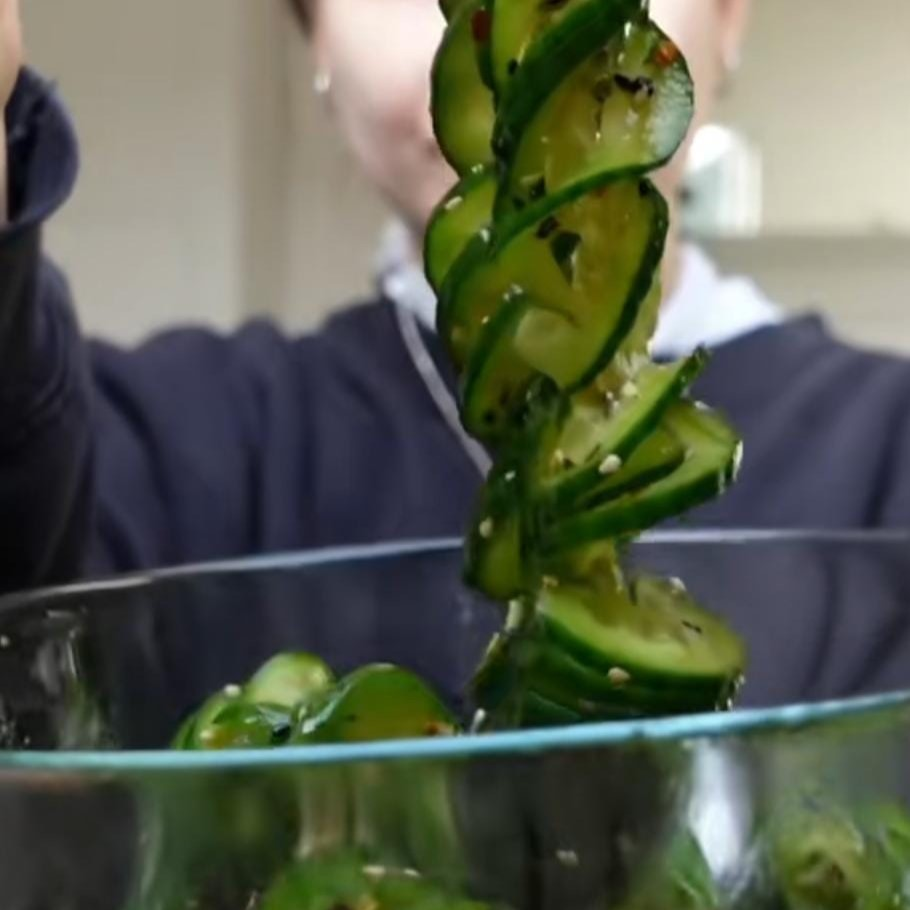
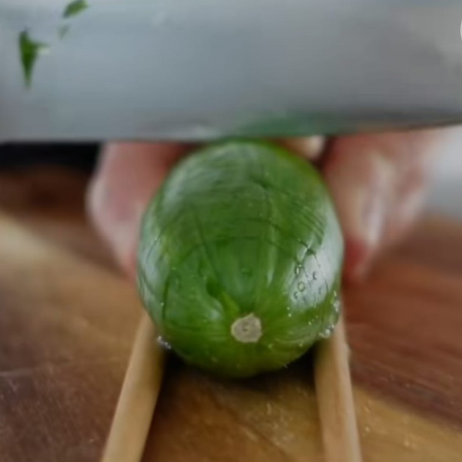

Asiatischer Gurkensalat


Zutaten:
(1 Portionen)
| 1 |
Gurke |
| 2 El |
Sojasauce |
| 2 El |
Sesamöl |
| 1 El |
Reisessig |
| 1 El |
Agavendicksaft |
| |
frischer Knoblauch |
| |
chilliflocken |
| 3 El |
gerösteter Sesam |
Schritte der Anleitung:
- Gurken zwischen 2 Stäbchen legen und dann zuerst gerade einschneiden.
- Danach umdrehen und schräg einschneiden
- Die Gurken in Salz einreiben und entwässern lassen.
- Danach abspülen und die Sauce dazu geben.